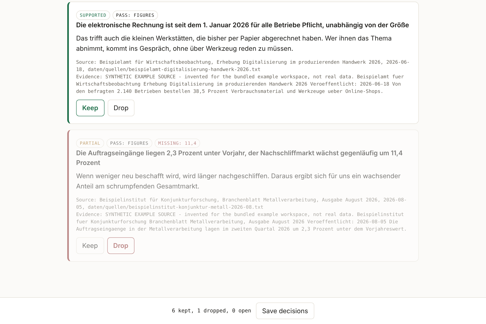

Ein Agententeam liefert viel Text, und eine ungeprüfte Zahl liest sich genau wie eine geprüfte. Hier kommt ein Rechercheergebnis erst in den Arbeitsbereich, wenn jede Zahl in der genannten Quelle nachgeschlagen wurde und ein Mensch entschieden hat, was bleibt. Der erste Prüfschritt braucht kein Modell und kostet nichts, der zweite muss die Stelle zitieren, auf die er sich stützt.
An agent team produces a lot of text, and an unchecked figure reads exactly like a checked one. Here a research finding only enters the workspace once every figure has been looked up in the source it names and a person has decided what stays. The first pass needs no model and costs nothing, the second must quote the passage it relies on.

Prüfstand gegen echte QuellenBenchmark against live sources
Jeder Fall ist ein Satz, den die Seite tatsächlich trägt, und jeder ist auf eine erklärte Weise verändert: Zahl wie veröffentlicht, in der anderen Schreibweise, eine Ziffer geändert, mit einer erfundenen gemischt oder richtig zitiert und die Aussage umgedreht. Ein Fall zeigt auf eine Adresse, die nicht antwortet. Beide Prüfschritte liefen live gegen die heutigen Seiten.
Each case is a sentence the page actually carries, altered in a declared way: figure as published, in the other locale convention, one digit changed, mixed with an invented one, or quoted correctly while the statement is reversed. One case points at an address that does not answer. Both passes ran live against today's pages.
…
Der Zahlenabgleich übersieht nichts Numerisches und schlägt nie falschen Alarm, lässt aber die zwei umgedrehten Aussagen durch. Genau die fängt der zweite Schritt.
The figure pass misses nothing numeric and raises no false alarm, but lets both reversed statements through. Those are exactly what the second pass catches.
Beispiellauf zum NachvollziehenExample run to follow along
Sieben Befunde einer Makroanalyse für einen Werkzeughändler, gegen mitgelieferte Beispielquellen geprüft. Ein Befund behauptet, der Nachschliffmarkt wachse um 11,4 Prozent, eine Zahl, die in keiner Quelle steht. Der Zahlenabgleich markiert ihn als teilweise belegt, der Mensch verwirft ihn, und die gepflegte Datei enthält am Ende nur, was belegt ist.
Seven findings of a macro analysis for a tooling dealer, checked against bundled example sources. One finding claims the regrinding market grows by 11.4 percent, a figure that appears in no source. The figure pass marks it partial, the person drops it, and the curated file ends up holding only what is backed.
…
AblaufHow it works
GrenzenLimits